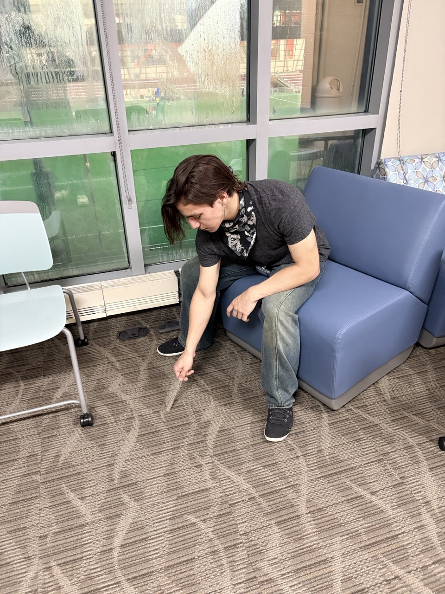

High school was entirely static and I was essentially doing the bare minimum to make it through. This is not ideal, and so I shall draw, skate, exclaim, run wherever I can.
A lot of my display will probably suck. That is good! Please be witness so that I am less afraid of displaying myself in front of others--not solitary.
Here is me recreating Napoleon drawing in sand after he was exiled. This was for a challenge called Dorm Discovery where I and a partner took pictures / videos doing average dorm activities like throwing out lint or flattening a cardboard box. This activity was rather random: recreate a famous painting or meme in a study lounge. Here I am anyway!
This helped me win a 20k mAh power bank btw ♥
